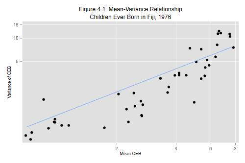

This unit illustrates the use of Poisson regression for modeling
count data. We will be using the poisson command,
often followed by estat gof to compute the model's
deviance, which we can use as a goodness of fit test
with both individual and grouped data.
An alternative way to fit these models is to use the glm
command to fit generalized linear models in the Poisson family with
link log. An advantage of that command is that it reports the deviance
and Pearson's chi-squared statistics. There's also an option to
adjust standard errors for extra-Poisson variation. We will
illustrate its use in the context of models for overdispersed count data.
We will use the data from Fiji on children ever born that appear on Table 4.1 of the lecture notes. The data are available on our datasets page at http://data.princeton.edu/wws509/datasets in both plain text and Stata formats. We will read the Stata file:
. use http://data.princeton.edu/wws509/datasets/ceb, clear (Children Ever Born Data, Fiji, 1976)
The file has 70 observations, one for each cell in the table. Each observation has a sequence number, numeric codes for marriage duration, residence and education, the mean and variance of children ever born, and the number of women in the cell.
We start by doing Figure 4.1, plotting the cell variances versus the cell means using a log-log-scale for cell with at least 20 cases. Because Stata has an option to use log scales we don't need to take logs ourselves:
. twoway (scatter var mean if n > 20) ///
> (function y=x, range (.7 7.8)) ///
> , xscale(log) yscale(log) legend(off) ///
> xtitle(Mean CEB) ytitle(Variance of CEB) ///
> title("Figure 4.1. Mean-Variance Relationship") ///
> subtitle("Children Ever Born in Fiji, 1976")
. graph export c4fig1.png, width(500) replace
(file c4fig1.png written in PNG format)

Clearly the variance increases with the mean. Most of the points lie below the 45 degree line, indicating that the variance is not exactly equal to the mean. Still, the assumption of proportionality brings as much closer to the data than the assumption of constant variance.
The dataset does not have information about the number of children ever born (CEB) to each woman, but it turns out we can still model the mean by working with the cell totals and introducing the log of the number of women in the cell as an offset.
If the number of CEB to one woman in a given cell is a Poisson random variable with mean (and variance) μ, then the number born to all n women in that cell is a Poisson r.v. with mean (and variance) nμ. The log of the expected sum is log(n)+log(μ), and consists of a known offset and the quantity we are interested in modeling. See the notes for further details
We therefore start by computing the outcome, the total CEB in each cell, and the offset:
. gen y = round( mean * n, 1) . gen os = log(n)
We also need dummy variables for the predictors. I will use local macros to store the names of the dummies that go with each predictor:
. // duration (reference is 0-4) . gen dur0509 = dur == 2 . gen dur1014 = dur == 3 . gen dur1519 = dur == 4 . gen dur2024 = dur == 5 . gen dur2529 = dur == 6 . local dur dur0509 dur1014 dur1519 dur2024 dur2529 . // residence (reference is Fiji) . gen urban = res == 2 . gen rural = res == 3 . local res urban rural . // education (reference is None) . gen lowerPri = educ == 2 . gen upperPri = educ == 3 . gen secPlus = educ == 4 . local educ lowerPri upperPri secPlus
We are ready to fit the null model, which has an offset but no predictors.
. poisson y, offset(os)
Iteration 0: log likelihood = -2080.664
Iteration 1: log likelihood = -2080.664
Poisson regression Number of obs = 70
LR chi2(0) = -0.00
Prob > chi2 = .
Log likelihood = -2080.664 Pseudo R2 = -0.0000
------------------------------------------------------------------------------
y | Coef. Std. Err. z P>|z| [95% Conf. Interval]
-------------+----------------------------------------------------------------
_cons | 1.376346 .0097119 141.72 0.000 1.357311 1.395381
os | (offset)
------------------------------------------------------------------------------
. di exp(_b[_cons])
3.9604033
. quietly sum mean [fw=n]
. di r(mean)
3.9604968
. estat gof
Goodness-of-fit chi2 = 3731.851
Prob > chi2(69) = 0.0000
The constant is the log of the mean number of children ever born. Exponentiating we see that the estimated mean is almost four children per woman. The estimate coincides with the sample mean, as we verified by averaging the cell means with the number of women as a frequency weight.
The deviance of 3,732 on 69 d.f. gives a clear indication that the model doesn't fit the data. The hypothesis that the expected number of CEB is the same for all women regardless of marriage duration, residence and education, is soundly rejected,
In rate models the offset usually represent the log of exposure,
and Stata lets us specify it directly using the offset()
option with the name of the variable representing the offset,
or using the exposure() option with the name of the
variable representing exposure, in which case Stata takes the log.
Next we fit the three one-factor models, starting with residence:
. poisson y `res', offset(os)
Iteration 0: log likelihood = -2051.3779
Iteration 1: log likelihood = -2044.3868
Iteration 2: log likelihood = -2044.3778
Iteration 3: log likelihood = -2044.3778
Poisson regression Number of obs = 70
LR chi2(2) = 72.57
Prob > chi2 = 0.0000
Log likelihood = -2044.3778 Pseudo R2 = 0.0174
------------------------------------------------------------------------------
y | Coef. Std. Err. z P>|z| [95% Conf. Interval]
-------------+----------------------------------------------------------------
urban | .1442896 .032448 4.45 0.000 .0806926 .2078866
rural | .2280596 .0278321 8.19 0.000 .1735097 .2826095
_cons | 1.204598 .0249922 48.20 0.000 1.155614 1.253581
os | (offset)
------------------------------------------------------------------------------
. di exp(_b[urban]), exp(_b[rural])
1.1552186 1.2561602
. estat gof
Goodness-of-fit chi2 = 3659.279
Prob > chi2(67) = 0.0000
The estimates show that women in urban and rural areas have on average 16 and 26% more children than women in Suva. The model chi-squared of 73 on 2 d.f. tells us that this model is a significant improvement over the null. The deviance, still in the thousands, tells us that this model is far from fitting the data.
Now for education
. poisson y `educ', offset(os)
Iteration 0: log likelihood = -1588.3352
Iteration 1: log likelihood = -1545.4751
Iteration 2: log likelihood = -1545.2371
Iteration 3: log likelihood = -1545.2371
Poisson regression Number of obs = 70
LR chi2(3) = 1070.85
Prob > chi2 = 0.0000
Log likelihood = -1545.2371 Pseudo R2 = 0.2573
------------------------------------------------------------------------------
y | Coef. Std. Err. z P>|z| [95% Conf. Interval]
-------------+----------------------------------------------------------------
lowerPri | -.2117869 .0216769 -9.77 0.000 -.2542729 -.1693008
upperPri | -.6160532 .0288581 -21.35 0.000 -.6726141 -.5594922
secPlus | -1.224676 .0514108 -23.82 0.000 -1.32544 -1.123913
_cons | 1.647278 .0146932 112.11 0.000 1.61848 1.676076
os | (offset)
------------------------------------------------------------------------------
. mata exp(st_matrix("e(b)"))
1 2 3 4
+---------------------------------------------------------+
1 | .8091371376 .5400718104 .2938527957 5.192824803 |
+---------------------------------------------------------+
. estat gof
Goodness-of-fit chi2 = 2660.998
Prob > chi2(66) = 0.0000
The estimates show that the number of CEB declines substantially with education. Women with secondary education or more have 71% fewer children than women with no education (or only 29% as many). The educational differential is highly significant, but this model doesn't fit the data.
Finally, here's duration:
. poisson y `dur', offset(os)
Iteration 0: log likelihood = -315.2481
Iteration 1: log likelihood = -297.80021
Iteration 2: log likelihood = -297.77426
Iteration 3: log likelihood = -297.77426
Poisson regression Number of obs = 70
LR chi2(5) = 3565.78
Prob > chi2 = 0.0000
Log likelihood = -297.77426 Pseudo R2 = 0.8569
------------------------------------------------------------------------------
y | Coef. Std. Err. z P>|z| [95% Conf. Interval]
-------------+----------------------------------------------------------------
dur0509 | 1.044886 .0523975 19.94 0.000 .9421893 1.147584
dur1014 | 1.444947 .0502397 28.76 0.000 1.346479 1.543416
dur1519 | 1.706756 .0497474 34.31 0.000 1.609253 1.80426
dur2024 | 1.877474 .0496492 37.81 0.000 1.780164 1.974785
dur2529 | 2.078855 .047507 43.76 0.000 1.985743 2.171967
_cons | -.1036046 .0441511 -2.35 0.019 -.1901391 -.01707
os | (offset)
------------------------------------------------------------------------------
. estat gof
Goodness-of-fit chi2 = 166.072
Prob > chi2(64) = 0.0000
Not surprisingly the number of CEB is much higher for women who have been married longer. This is by far the most important predictor of CEB, with a chi-squared of 3,566 on just 5 d.f. In fact, a demographer wouldn't even have looked at models that did not include a control for duration of marriage. It's nice to see that Poisson regression can uncover the obvious :) Note that this model still doesn't fit the data.
The deviances given in this section are pretty close to the deviances in Table 4.3 of the notes. You will notice small differences due to the use of different rounding procedures. In the notes we multiplied the mean CEB by the number of women and retained a few decimals. Here we rounded the total number of CEB to the nearest integer. If you omit the rounding you will reproduce the results in the notes exactly.
We now consider models that take two of the three factors into account. Following the notes we consider only models that include duration of marriage, an essential control when we study cumulative fertility. This leaves two models with main effects of two factors, and another two models that add one interaction.
Because we are only interested in deviances I will run the estimation commands quietly. I will also use factor variables because it simplifies specifying the models. You can always build the dummies from first principles.
So here are the additive models
. quietly poisson y i.dur i.res , offset(os)
. estat gof
Goodness-of-fit chi2 = 120.6806
Prob > chi2(62) = 0.0000
. quietly poisson y i.dur i.educ, offset(os)
. estat gof
Goodness-of-fit chi2 = 100.1919
Prob > chi2(61) = 0.0012
And here are the models with one interaction
. quietly poisson y i.dur#i.res , offset(os)
. estat gof
Goodness-of-fit chi2 = 108.8968
Prob > chi2(52) = 0.0000
. quietly poisson y i.dur#i.educ, offset(os)
. estat gof
Goodness-of-fit chi2 = 84.53072
Prob > chi2(46) = 0.0005
The best fit so far is the model that includes duration and education, but it exhibits significant lack of fit with a chi-squared of 84.5 on 46 d.f.
We are now ready to look at models that include all three factors. We start with the additive model. I will use dummy variables because it makes the output a bit clearer, but we can get exactly the same result with factor variables.
. poisson y `dur' `res' `educ', offset(os)
Iteration 0: log likelihood = -623.59688
Iteration 1: log likelihood = -252.64903
Iteration 2: log likelihood = -250.07248
Iteration 3: log likelihood = -250.07108
Iteration 4: log likelihood = -250.07108
Poisson regression Number of obs = 70
LR chi2(10) = 3661.19
Prob > chi2 = 0.0000
Log likelihood = -250.07108 Pseudo R2 = 0.8798
------------------------------------------------------------------------------
y | Coef. Std. Err. z P>|z| [95% Conf. Interval]
-------------+----------------------------------------------------------------
dur0509 | .9969348 .0527437 18.90 0.000 .8935591 1.100311
dur1014 | 1.369395 .0510688 26.81 0.000 1.269302 1.469488
dur1519 | 1.613757 .0511949 31.52 0.000 1.513417 1.714097
dur2024 | 1.784911 .0512138 34.85 0.000 1.684534 1.885288
dur2529 | 1.976405 .0500341 39.50 0.000 1.87834 2.07447
urban | .1124186 .0324963 3.46 0.001 .048727 .1761102
rural | .1516602 .0283292 5.35 0.000 .096136 .2071845
lowerPri | .0229728 .0226563 1.01 0.311 -.0214327 .0673783
upperPri | -.1012738 .0309871 -3.27 0.001 -.1620073 -.0405402
secPlus | -.3101495 .0552107 -5.62 0.000 -.4183605 -.2019386
_cons | -.1170972 .0549118 -2.13 0.033 -.2247222 -.0094721
os | (offset)
------------------------------------------------------------------------------
. estat gof
Goodness-of-fit chi2 = 70.66559
Prob > chi2(59) = 0.1421
This model passes the goodness of fit hurdle, with a deviance of 70.67 on 59 d.f. and a corresponding P-value of 0.14, so we have no evidence against this model.
To exponentiate the parameter estimates we can reissue with
poisson command with the irr option,
which is short for incidence-rate ratios.
. poisson, irr
Poisson regression Number of obs = 70
LR chi2(10) = 3661.19
Prob > chi2 = 0.0000
Log likelihood = -250.07108 Pseudo R2 = 0.8798
------------------------------------------------------------------------------
y | IRR Std. Err. z P>|z| [95% Conf. Interval]
-------------+----------------------------------------------------------------
dur0509 | 2.709963 .1429334 18.90 0.000 2.443812 3.005099
dur1014 | 3.932972 .2008521 26.81 0.000 3.558369 4.34701
dur1519 | 5.021644 .2570824 31.52 0.000 4.542226 5.551663
dur2024 | 5.95905 .3051855 34.85 0.000 5.389938 6.588254
dur2529 | 7.216753 .3610835 39.50 0.000 6.542636 7.960327
urban | 1.118981 .0363628 3.46 0.001 1.049934 1.192569
rural | 1.163765 .0329685 5.35 0.000 1.100909 1.230209
lowerPri | 1.023239 .0231828 1.01 0.311 .9787954 1.0697
upperPri | .9036856 .0280026 -3.27 0.001 .850435 .9602706
secPlus | .7333373 .040488 -5.62 0.000 .6581249 .8171451
os | (offset)
------------------------------------------------------------------------------
Briefly the estimates indicate that the number of CEB increases rapidly with marital duration, in each category of residence and education women married 15-19 years have five times as many children as those married less than five years. Women who live in urban and rural areas have 12% and 16% more children than women who live in Suva and have the same marriage duration and education. Finally, more educated women have fewer children, with women with secondary or more education reporting 27% fewer children than women with no education who live in the same type of place of residence and have been married just as long.
We now put the additive model to some "stress tests" by considering
all possible interactions. I will use factor variables for
simplicity and quietly to save space.
. quietly poisson y i.dur i.educ#i.res, offset(os)
. estat gof
Goodness-of-fit chi2 = 59.92104
Prob > chi2(53) = 0.2391
. quietly poisson y i.dur#i.res i.educ, offset(os)
. estat gof
Goodness-of-fit chi2 = 57.13525
Prob > chi2(49) = 0.1986
. quietly poisson y i.dur#i.educ i.res, offset(os)
. estat gof
Goodness-of-fit chi2 = 54.80171
Prob > chi2(44) = 0.1274
. quietly poisson y (i.dur i.res)#i.educ, offset(os)
. estat gof
Goodness-of-fit chi2 = 44.52355
Prob > chi2(38) = 0.2163
. quietly poisson y (i.dur i.educ)#i.res, offset(os)
. estat gof
Goodness-of-fit chi2 = 44.31134
Prob > chi2(43) = 0.4161
. quietly poisson y i.dur#(i.res i.educ), offset(os)
. estat gof
Goodness-of-fit chi2 = 42.65186
Prob > chi2(34) = 0.1467
. quietly poisson y i.dur i.educ i.res ///
> i.dur#i.educ i.dur#i.res i.res#i.educ, offset(os)
. estat gof
Goodness-of-fit chi2 = 30.85619
Prob > chi2(28) = 0.3235
These calculations complete Table 4.3 in the notes. I reported the deviances for consistency with the notes, but could just as well have reported likelihood ratio tests comparing each of these models to the additive model. Make sure you know how to use the output to test, for example, whether we need to add a duration by education interaction. It should be clear from the list of deviances that we don't need to add any of these terms. We conclude that the additive model does a fine job indeed.
it's important to note that the need for interactions depends exactly on what's being modeled. Here we used the log link, so all effects are relative. In this scale no interactions are needed. If we used the identity link we would be modeling the actual number of children ever born and all effects would be absolute. In that scale we would need, at the very least, interactions with duration of marriage. See the notes for further discussion.
Note 1: some of these models may fail in older versions of Stata,
which by default allowed up to 40 parameters per model.
The solution is to increase the maximum using the command
set matsize 60.
Stata 9 increased the default to 200, which is more than we
need for all of these models.
Note 2: If you are using the xi prefix and look at
the detailed output you will see that Stata drops some
variables due to multicollinearity. This is usually no cause
for alarm. The xi prefix is not terribly smart
in handling factors involved in more than one interaction and
will try to include the main effects twice. When this happens
the variables dropped are the copies and the originals are
already included in the model, as you can verify by inspecting
the listing.